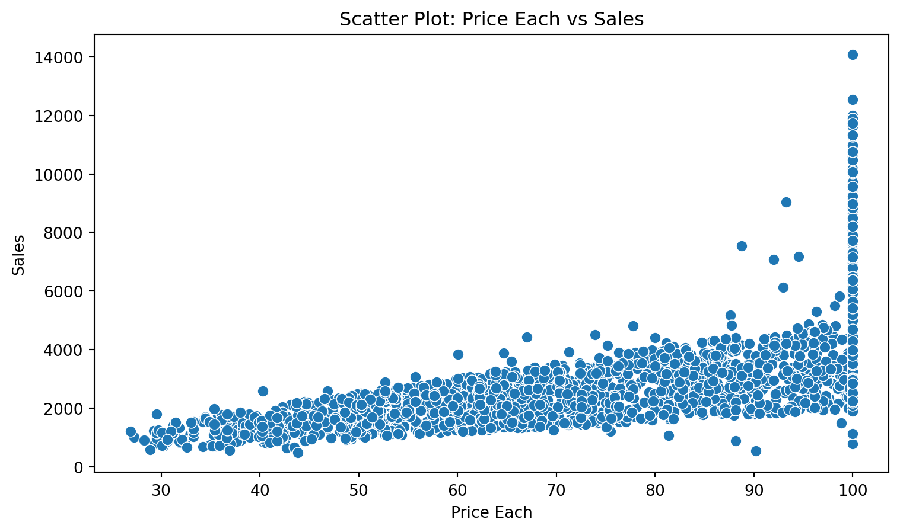
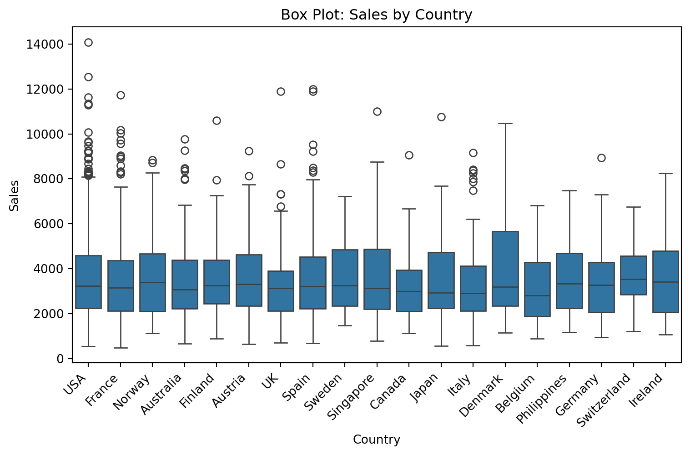
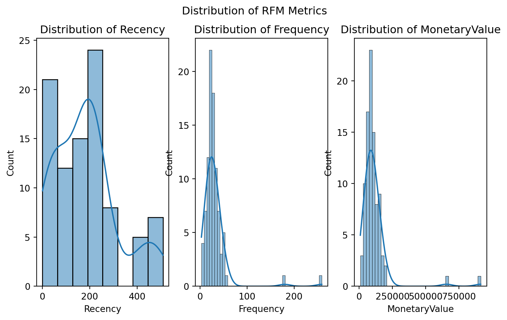
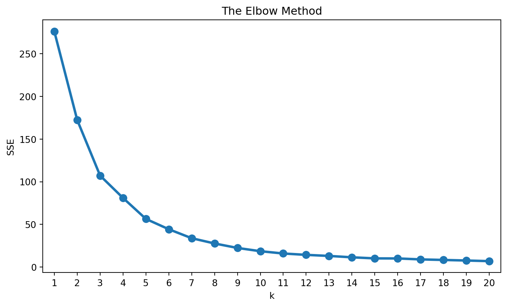
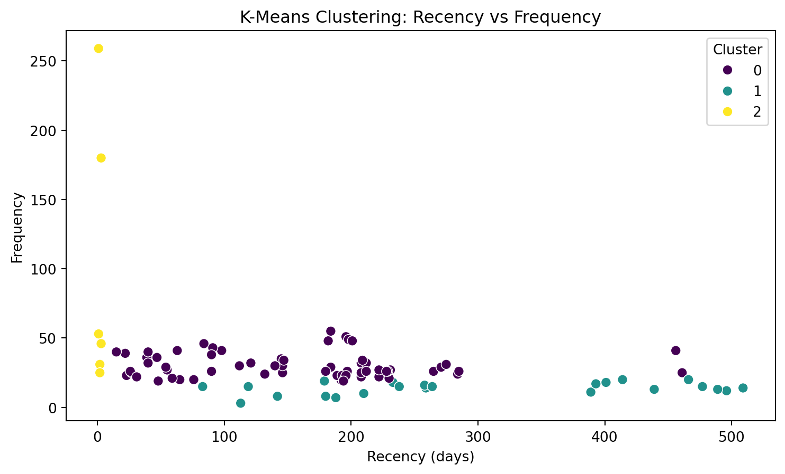
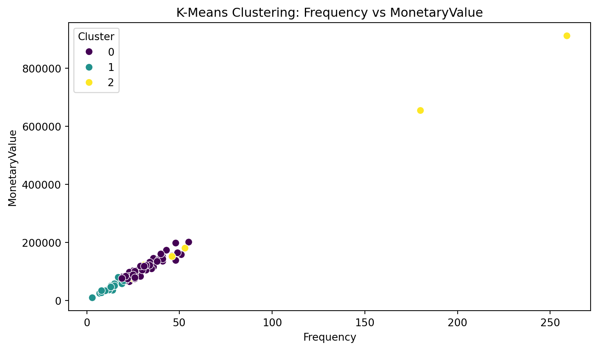
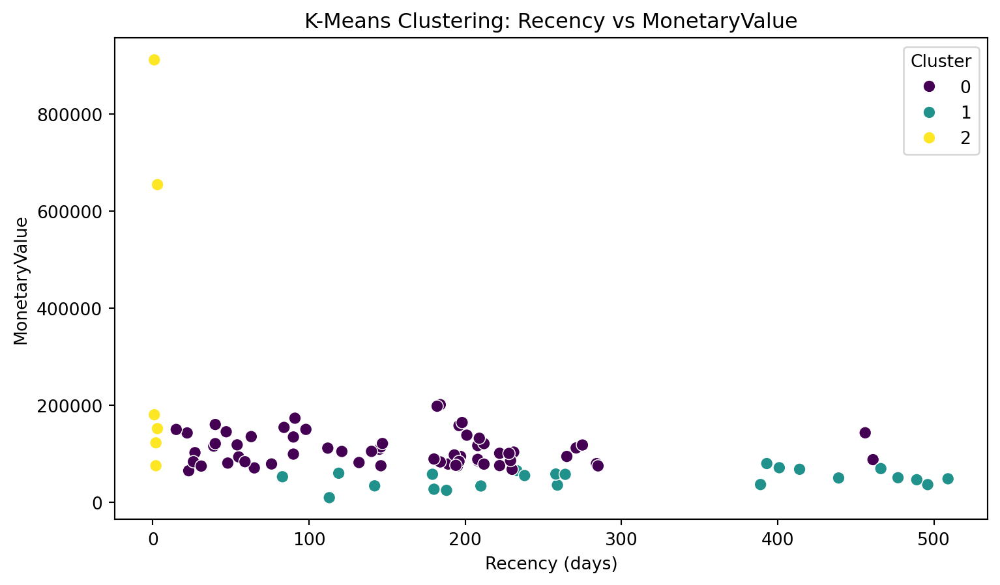
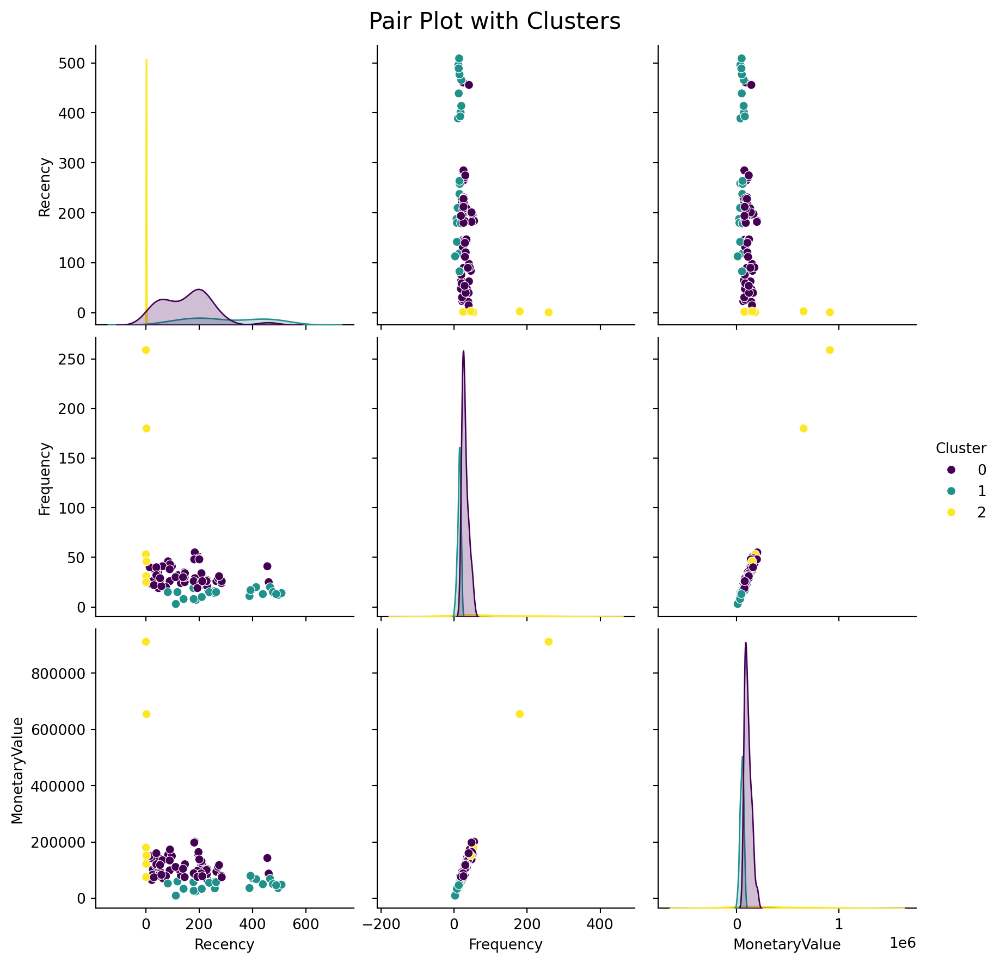
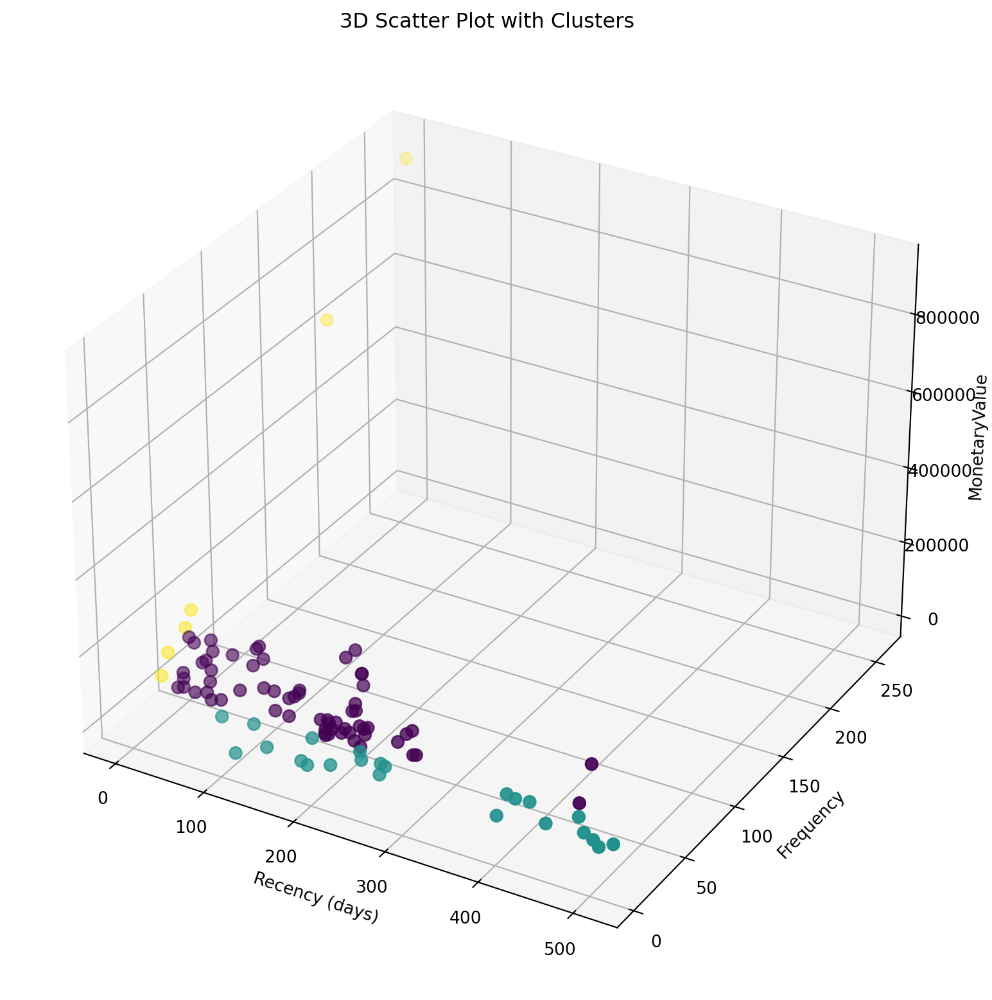

Unveiling Customer Segmentation through RFM Analysis and K-Means Clustering (BLOG ON CLUSTERING)
Clustering
K-Means Clustering
RFM analysis
Author
Gayatri Milind Bhatambarekar
Published
December 7, 2023
In the world of business, understanding your customers is paramount. It’s not just about the products or services you offer; it’s about knowing your customers’ preferences, behaviors, and how they engage with your brand. One powerful tool for gaining such insights is RFM analysis combined with K-Means clustering.
Exploring the Sales Dataset
Our blog begins with exploring the sales dataset. We load the dataset, taking a sneak peek at the first 10 rows to get a sense of the data’s structure.
# Importing necessary librariesimport pandas as pdimport numpy as npimport seaborn as snsimport matplotlib.pyplot as plt# Load the sales datasetdf = pd.read_csv('sales_data_sample.csv', encoding='unicode_escape')# Display the first few rowsdf.head()
ORDERNUMBER
QUANTITYORDERED
PRICEEACH
ORDERLINENUMBER
SALES
ORDERDATE
STATUS
QTR_ID
MONTH_ID
YEAR_ID
...
ADDRESSLINE1
ADDRESSLINE2
CITY
STATE
POSTALCODE
COUNTRY
TERRITORY
CONTACTLASTNAME
CONTACTFIRSTNAME
DEALSIZE
0
10107
30
95.70
2
2871.00
2/24/2003 0:00
Shipped
1
2
2003
...
897 Long Airport Avenue
NaN
NYC
NY
10022
USA
NaN
Yu
Kwai
Small
1
10121
34
81.35
5
2765.90
5/7/2003 0:00
Shipped
2
5
2003
...
59 rue de l'Abbaye
NaN
Reims
NaN
51100
France
EMEA
Henriot
Paul
Small
2
10134
41
94.74
2
3884.34
7/1/2003 0:00
Shipped
3
7
2003
...
27 rue du Colonel Pierre Avia
NaN
Paris
NaN
75508
France
EMEA
Da Cunha
Daniel
Medium
3
10145
45
83.26
6
3746.70
8/25/2003 0:00
Shipped
3
8
2003
...
78934 Hillside Dr.
NaN
Pasadena
CA
90003
USA
NaN
Young
Julie
Medium
4
10159
49
100.00
14
5205.27
10/10/2003 0:00
Shipped
4
10
2003
...
7734 Strong St.
NaN
San Francisco
CA
NaN
USA
NaN
Brown
Julie
Medium
5 rows × 25 columns
# Checking the shape and data types of the datasetprint(df.shape)
(2823, 25)
The dataset comprises various columns, including order numbers, quantities ordered, prices, order dates, customer details, and more. With 2823 rows, it offers a substantial amount of data for our analysis.
# Descriptive statistics of the datasetdf.describe()
ORDERNUMBER
QUANTITYORDERED
PRICEEACH
ORDERLINENUMBER
SALES
QTR_ID
MONTH_ID
YEAR_ID
MSRP
count
2823.000000
2823.000000
2823.000000
2823.000000
2823.000000
2823.000000
2823.000000
2823.00000
2823.000000
mean
10258.725115
35.092809
83.658544
6.466171
3553.889072
2.717676
7.092455
2003.81509
100.715551
std
92.085478
9.741443
20.174277
4.225841
1841.865106
1.203878
3.656633
0.69967
40.187912
min
10100.000000
6.000000
26.880000
1.000000
482.130000
1.000000
1.000000
2003.00000
33.000000
25%
10180.000000
27.000000
68.860000
3.000000
2203.430000
2.000000
4.000000
2003.00000
68.000000
50%
10262.000000
35.000000
95.700000
6.000000
3184.800000
3.000000
8.000000
2004.00000
99.000000
75%
10333.500000
43.000000
100.000000
9.000000
4508.000000
4.000000
11.000000
2004.00000
124.000000
max
10425.000000
97.000000
100.000000
18.000000
14082.800000
4.000000
12.000000
2005.00000
214.000000
Data Cleaning and Transformation
Before diving into analysis, we will first perform data cleaning and transformation. We drop unnecessary columns that won’t significantly contribute to our analysis, such as phone numbers and addresses.
Additionally, we convert the ‘ORDERDATE’ column to a proper date format for easier handling later in our analysis.
# Convert 'ORDERDATE' to datetime formatdf['ORDERDATE'] = pd.to_datetime(df['ORDERDATE'])
RFM Analysis: Understanding Customer Behavior
RFM analysis involves three key metrics:
Recency, Frequency, and MonetaryValue. These metrics provide a holistic view of customer behavior.
Recency: Recency represents how recently a customer made a purchase. We calculate it by finding the number of days since the last purchase for each customer.
Frequency: Frequency measures how often a customer makes a purchase. It is simply the count of orders placed by a customer.
MonetaryValue: MonetaryValue is the total amount a customer has spent on purchases.
# Calculate Recency, Frequency, and MonetaryValue for each customerlatest_date = df['ORDERDATE'].max() + pd.to_timedelta(1, 'D') # Latest date in the datasetdf_RFM = df.groupby(['CUSTOMERNAME'])df_RFM = df_RFM.agg({'ORDERDATE': lambda x: (latest_date - x.max()).days,'ORDERNUMBER': 'count','SALES': 'sum'})# Rename columns for claritydf_RFM.rename(columns={'ORDERDATE': 'Recency', 'ORDERNUMBER': 'Frequency', 'SALES': 'MonetaryValue'}, inplace=True)# Display the first few rows of the RFM datadf_RFM.head()
Recency
Frequency
MonetaryValue
CUSTOMERNAME
AV Stores, Co.
196
51
157807.81
Alpha Cognac
65
20
70488.44
Amica Models & Co.
265
26
94117.26
Anna's Decorations, Ltd
84
46
153996.13
Atelier graphique
188
7
24179.96
Our RFM data now provides insights into how recently customers made a purchase, how frequently they buy, and how much money they spend.
Data Exploration and Visualization
The scatter plot below illustrates the relationship between the quantity of items ordered and the corresponding total sales. Each point on the graph represents a transaction, allowing us to visually assess how changes in quantity impact overall sales.
In the scatter plot depicted, we delve into the connection between the price of individual items and the resulting sales. This visualization helps us discern any patterns or trends in sales concerning the pricing of products.
plt.figure(figsize=(9, 5))sns.scatterplot(x='PRICEEACH', y='SALES', data=df, s=50)plt.title('Scatter Plot: Price Each vs Sales')plt.xlabel('Price Each')plt.ylabel('Sales')plt.show()

The box plot provides a overview of sales distribution across different countries. Each box represents the interquartile range of sales within a specific country, offering insights into the variability and central tendencies of sales data.
plt.figure(figsize=(9, 5))sns.boxplot(x='COUNTRY', y='SALES', data=df)plt.title('Box Plot: Sales by Country')plt.xlabel('Country')plt.ylabel('Sales')plt.xticks(rotation=45, ha='right')plt.show()

Before diving into the clustering process, let’s explore our data visually. We create histograms to visualize the distribution of Recency, Frequency, and MonetaryValue.
import seaborn as snsimport matplotlib.pyplot as plt# Visualize the distribution of Recency, Frequency, and MonetaryValueplt.figure(figsize=(9, 5))plt.subplot(1, 3, 1)sns.histplot(df_RFM['Recency'], kde=True)plt.title('Distribution of Recency')plt.subplot(1, 3, 2)sns.histplot(df_RFM['Frequency'], kde=True)plt.title('Distribution of Frequency')plt.subplot(1, 3, 3)sns.histplot(df_RFM['MonetaryValue'], kde=True)plt.title('Distribution of MonetaryValue')plt.suptitle('Distribution of RFM Metrics')plt.show()

These histograms give us a glimpse into the distribution of Recency, Frequency, and MonetaryValue. We observe the skewness and decide to apply a log transformation to address this.
Log Transformation and Standardization
To handle skewed data, we perform a log transformation on the RFM values. This not only helps in scaling the data but also in normalizing it.
import numpy as np# Log transformation of the RFM datadata_log = np.log(df_RFM)# Display the first few rows of the log-transformed datadata_log.head()
Recency
Frequency
MonetaryValue
CUSTOMERNAME
AV Stores, Co.
5.278115
3.931826
11.969133
Alpha Cognac
4.174387
2.995732
11.163204
Amica Models & Co.
5.579730
3.258097
11.452297
Anna's Decorations, Ltd
4.430817
3.828641
11.944683
Atelier graphique
5.236442
1.945910
10.093279
Next, we standardize the log-transformed data using the StandardScaler.
from sklearn.preprocessing import StandardScaler# Initialize the scalerscaler = StandardScaler()# Fit and transform the log-transformed datadata_normalized = scaler.fit_transform(data_log)# Create a DataFrame with the normalized datadata_normalized = pd.DataFrame(data_normalized, index=data_log.index, columns=data_log.columns)# Display summary statistics of the standardized datadata_normalized.describe().round(2)
Recency
Frequency
MonetaryValue
count
92.00
92.00
92.00
mean
0.00
-0.00
0.00
std
1.01
1.01
1.01
min
-3.51
-3.67
-3.82
25%
-0.24
-0.41
-0.39
50%
0.37
0.06
-0.04
75%
0.53
0.45
0.52
max
1.12
4.03
3.92
Our RFM data is now transformed, scaled, and ready for the next step: K-Means Clustering.
K-Means Clustering: Unveiling Customer Segments
K-Means clustering is a powerful technique to group similar data points into clusters. The elbow method helps us determine the optimal number of clusters.
from sklearn.cluster import KMeansimport matplotlib.pyplot as pltimport seaborn as sns# Calculate SSE for different values of k (number of clusters)sse = {}for k inrange(1, 21): kmeans = KMeans(n_clusters=k, random_state=1, n_init=10) # Set n_init explicitly kmeans.fit(data_normalized) sse[k] = kmeans.inertia_plt.figure(figsize=(9, 5))plt.title('The Elbow Method')# Add X-axis label "k"plt.xlabel('k')# Add Y-axis label "SSE"plt.ylabel('SSE')#Plot SSE values for each key in the dictionarysns.pointplot(x=list(sse.keys()), y=list(sse.values()))# plt.text(4.5, 60, "Largest Angle", bbox=dict(facecolor='lightgreen', alpha=0.5))plt.show()

The elbow method guides us in choosing the number of clusters. In this case, we observe an ‘elbow’ around 3 clusters, indicating a reasonable balance between model complexity and performance.
Now, we proceed with K-Means clustering using 3 clusters.
# Initialize KMeans with 3 clusterskmeans = KMeans(n_clusters=3, random_state=1, n_init=10)# Fit KMeans on the normalized datakmeans.fit(data_normalized)# Extract cluster labelscluster_labels = kmeans.labels_# Add cluster labels to the original RFM datadata_rfm = df_RFM.assign(Cluster=cluster_labels)# Display the first few rows of the clustered datadata_rfm.head()
Recency
Frequency
MonetaryValue
Cluster
CUSTOMERNAME
AV Stores, Co.
196
51
157807.81
0
Alpha Cognac
65
20
70488.44
0
Amica Models & Co.
265
26
94117.26
0
Anna's Decorations, Ltd
84
46
153996.13
0
Atelier graphique
188
7
24179.96
1
Our data is now enriched with cluster labels, revealing the segment to which each customer belongs.
With customers grouped into clusters, we analyze each cluster’s characteristics, focusing on average Recency, Frequency, and MonetaryValue.
# Group the data by clustergrouped = data_rfm.groupby(['Cluster'])# Calculate average RFM values and segment sizes per clustercluster_stats = grouped.agg({'Recency': 'mean','Frequency': 'mean','MonetaryValue': ['mean', 'count']}).round(1)# Display the cluster statisticscluster_stats
Recency
Frequency
MonetaryValue
mean
mean
mean
count
Cluster
0
156.7
30.4
108231.7
63
1
301.7
13.7
48611.9
23
2
2.0
99.0
349326.5
6
The cluster statistics showcase the average Recency, Frequency, and MonetaryValue for each cluster, providing insights into their unique characteristics.
Relative Importance: What Sets Each Cluster Apart?
To understand what distinguishes each cluster, we calculate the relative importance of each RFM attribute within each cluster compared to the entire customer population.
# Calculate relative importance of each attribute within each clustercluster_avg = data_rfm.groupby(['Cluster']).mean()population_avg = df_RFM.mean()# Calculate relative importancerelative_imp = cluster_avg / population_avg -1# Display relative importance scoresrelative_imp.round(2)
Recency
Frequency
MonetaryValue
Cluster
0
-0.14
-0.01
-0.01
1
0.65
-0.55
-0.55
2
-0.99
2.23
2.20
These relative importance scores shed light on how each cluster deviates from the overall customer population.
Visualizing Customer Segmentation
The real power of our analysis comes when we visualize customer segmentation. We create scatter plots, pair plots, and even a 3D scatter plot to provide a comprehensive view.
import seaborn as snsimport matplotlib.pyplot as pltfrom mpl_toolkits.mplot3d import Axes3D# Scatter plot of Recency vs Frequency with clustersplt.figure(figsize=(9, 5))sns.scatterplot(x='Recency', y='Frequency', hue='Cluster', data=data_rfm, palette='viridis', s=50)plt.title('K-Means Clustering: Recency vs Frequency')plt.xlabel('Recency (days)')plt.ylabel('Frequency')plt.legend(title='Cluster')plt.show()

# Scatter plot of Frequency vs MonetaryValue with clustersplt.figure(figsize=(9, 5))sns.scatterplot(x='Frequency', y='MonetaryValue', hue='Cluster', data=data_rfm, palette='viridis', s=50)plt.title('K-Means Clustering: Frequency vs MonetaryValue')plt.xlabel('Frequency')plt.ylabel('MonetaryValue')plt.legend(title='Cluster')plt.show()

# Scatter plot of Recency vs MonetaryValue with clustersplt.figure(figsize=(9, 5))sns.scatterplot(x='Recency', y='MonetaryValue', hue='Cluster', data=data_rfm, palette='viridis', s=50)plt.title('K-Means Clustering: Recency vs MonetaryValue')plt.xlabel('Recency (days)')plt.ylabel('MonetaryValue')plt.legend(title='Cluster')plt.show()

# Pair plot with clusterssns.pairplot(data_rfm, hue='Cluster', palette='viridis', diag_kind='kde', height=3)plt.suptitle('Pair Plot with Clusters', y=1.02, size=16)plt.show()

# 3D Scatter plot with clustersfig = plt.figure(figsize=(12, 10))ax = fig.add_subplot(111, projection='3d')ax.scatter(data_rfm['Recency'], data_rfm['Frequency'], data_rfm['MonetaryValue'], c=data_rfm['Cluster'], cmap='viridis', s=50)ax.set_xlabel('Recency (days)')ax.set_ylabel('Frequency')ax.set_zlabel('MonetaryValue')ax.set_title('3D Scatter Plot with Clusters')plt.show()

These visualizations provide an intuitive understanding of how customers are segmented based on Recency, Frequency, and MonetaryValue.
Conclusion
In this blog of data exploration and analysis, we have unraveled valuable insights into customer behavior. Through RFM analysis and K-Means clustering, we’ve segmented customers into distinct groups, each with its own characteristics and relative importance.
Understanding these customer segments empowers businesses to tailor their strategies, personalize marketing efforts, and enhance overall customer experience.